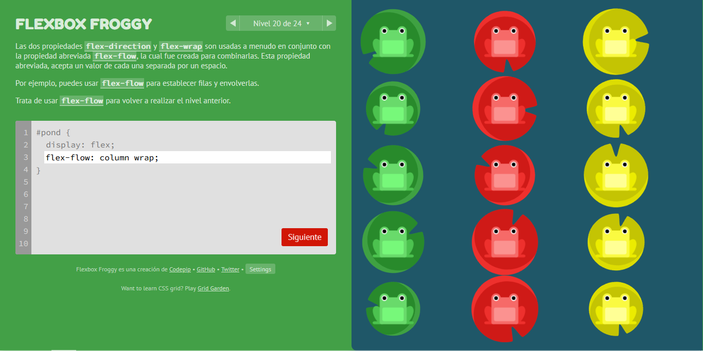
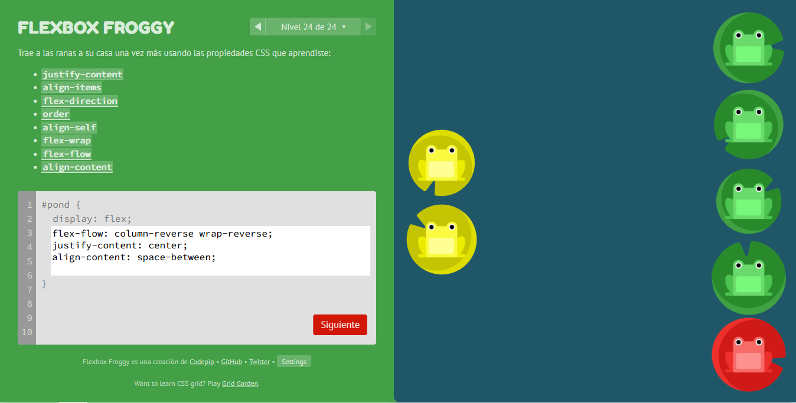
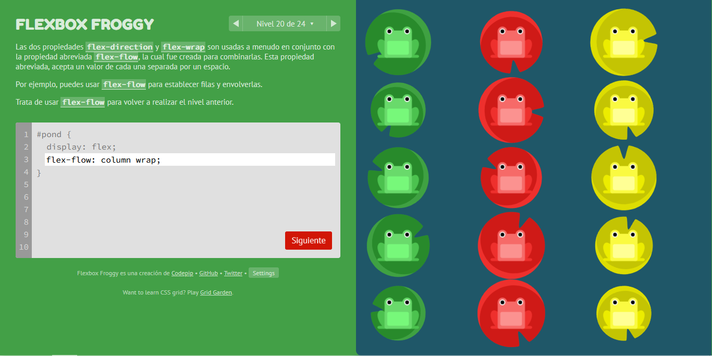
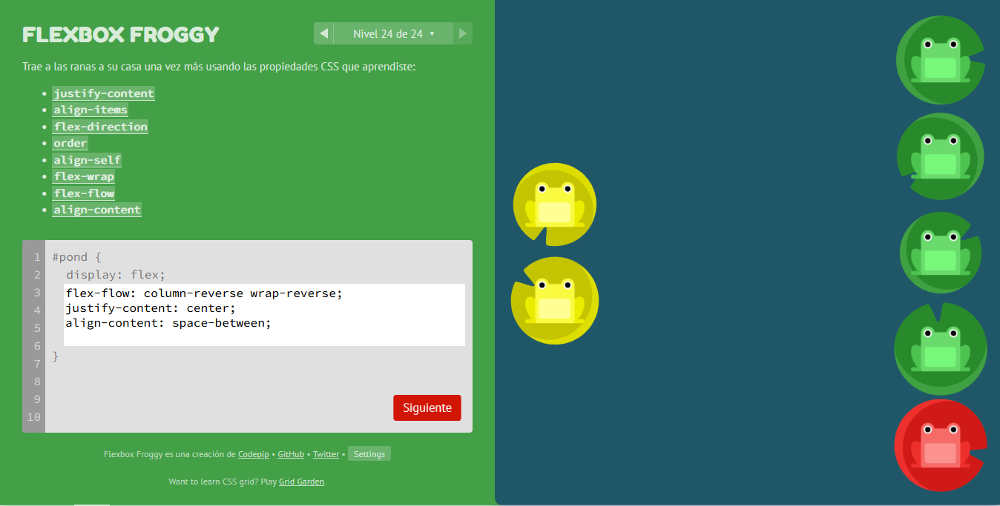

ETIQUETAS SEMANTICAS html5
Las etiquetas semánticas ayudan a la implementación de los estándares de la Web Semántica, cuya finalidad es hacer el contenido de internet legible para aplicaciones informáticas. Uno de los usos mas importantes de este tipo de etiquetas es la de marcar la información de la pagina para ser indexada por los buscadores web como Google.
| Etiqueta | Descripcion |
|---|---|
| <header> | Representa un grupo de ayudas introductorias o de navegación. También puede contener logos, formulario de búsqueda o tabla de contenidos. |
| <nav> | Sección de una página que enalza a otras páginas o partes de la misma. Una sección con links de navegación. |
| <aside> | Sección de una página que contiene contenido relacionado tangencialmente al de su alrededor. Por lo genreal como barras laterales. |
| <main> | Representa el contenido predominante de la página debe tener solo un tag <main> solo debe estar contenida por tags de tipo <html> , <body> , <div> o <form>. |
| <article> | Representa una sección de contenido que puede ser distribuido de forma independiente. Puede ser un post en un foro, un articulo de periódico, una entrada de un blog, un comentario, etc. |
| <section> | Representa a una sección genénerica de una pagina. Agrupa contenidos que tienen una relación temática entre si. |
| <footer> | Representa un pie de página para el elemento que lo contiene. Generalmente contiene información acerca de quién lo escribió, enlaces a documentos relacionados, datos de derechos de auto o similares. |
 


